<!--doctype html--><html></html><html lang="en"><head><title>BI TECH CP303 - Data Mining</title><meta charset="UTF-8"/><meta name="fragment" content="!"/><meta name="viewport" content="width=device-width, initial-scale=1, maximum-scale=1"/><link rel="stylesheet" href="css/foundation.min.css"/><link rel="stylesheet" href="css/reveal.css"/><!-- Theme for syntax highlighting--><link rel="stylesheet" href="lib/css/zenburn.css"/><link rel="stylesheet" href="css/theme/data-mining.css"/></head><body><header class="full-width header-area"><div class="row"><div class="large-12 columns"></div></div></header><div id="main-nav"></div><div class="contain-to-grid navigation-area"><div class="row"><div class="large-12 columns"><nav class="top-bar"><ul class="title-area"><li class="toggle-topbar menu-icon"><a href="#">nav            </a></li></ul><section class="top-bar-section"><ul class="right"><li class="has-dropdown not-click"><a href="#" class="active">Topic</a><ul class="dropdown"><li class="active"><a href="#/intro" class="active">Intro to data mining and R</a></li><li class="active"><a href="#/regression" class="active">Linear regression</a></li><li class="active"><a href="#/selection" class="active">Model selection </a></li><li class="active"><a href="#/logistic" class="active">Logistic regression</a></li><li class="active"><a href="#/trees" class="active">Classification Trees </a></li><li class="active"><a href="#/rules" class="active">Association Rules</a></li><li class="active"><a href="#/clustering" class="active">Clustering</a></li><li class="active"><a href="#/share" class="active">Markdown</a></li></ul></li><li class="has-dropdown not-click"><a href="#" class="active">About </a><ul class="dropdown"><li class="active"><a href="#/how_to" class="active">how to use these slides </a></li><li class="active"><a href="#/textbook" class="active">textbook</a></li><li class="active"><a href="#/author" class="active">the author</a></li></ul></li><li class="active not-click"><a href="https://github.com/erinshellman/data-mining-starter-kit/issues" class="active">Report a bug</a></li></ul></section></nav></div></div></div><div class="reveal"><div class="slides"><section class="title-slide"><h1>BI Tech CP303 - Data Mining</h1><h2>Erin Shellman - <a href="mailto:shellman@uw.edu" class="active">shellman@uw.edu</a></h2><h2><b>TA</b>: Bryan Mayer - <a href="mailto:mayerbry@uw.edu" class="active">mayerbry@uw.edu</a></h2><p>Welcome! These are lecture notes that accompany an applied course on data mining. Read the <a href="https://github.com/erinshellman/BI-TECH-CP303/blob/master/README.md">syllabus</a> to find details about assignments and due dates.</p></section><section id="textbook" data-transition-speed="fast"><h1>Textbooks</h1><p>Everything you need for this course is in these notes and R tutorials, but there are some great textbooks available for free online.</p><div class="flex-row"><a href="http://www.mmds.org/" class="left"></a><a href="http://statweb.stanford.edu/~tibs/ElemStatLearn/" class="right">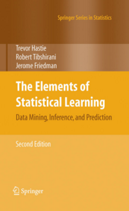</a><a href="http://www.statsoft.com/Textbook/Data-Mining-Techniques" class="right"></a></div></section><section data-transition-speed="fast"><h1>Course Philosophy</h1><p>Data mining is an applied skill and this course focuses on applications. Each class is a blend of concepts and applications using the programming language R. There are three projects, each consisting of a data mining analysis to solve a business problem and a brief written report of your findings.</p><p>By the end of this course, you'll be able to approach unfamiliar data and quickly find and communicate results.</p></section><section data-transition-speed="fast"><section data-transition-speed="fast"><h1>Navigating the notes</h1><p>The notes progress from left to right, and for those interested in exploring more about a topic sometimes there's bonus material in the up, down direction.</p></section><section data-transition-speed="fast"><h1>Just like this!</h1></section></section><section data-transition-speed="fast"><h1>Traverse the topics </h1><p>You can also locate slides by topic using the navigation bar at the top.</p></section><section data-transition-speed="fast"><h1>Bookmark and check back often!</h1><p>Data technology is a rapidly growing and changing industry. I chose <a href="http://lab.hakim.se/reveal-js/#/">a web-based format</a> for course notes so the slides could be easily maintained and up-to-date. As you apply these skills outside of class, I hope these notes can be a valuable reference.</p></section><section id="how_to" data-transition-speed="fast"><h1>Notes improved with the support of viewers like you!</h1><p>These slides are a work in progress and I need your help to make them rule. If you see an error or think something is unclear or omitted, please <a href="https://github.com/erinshellman/data-mining-starter-kit/issues">report it!</a></p><p>I'll do my best to keep the slides as updated and accurate as possible.</p></section><section id="intro" data-background="images/data_miner1.jpg" data-background-size="cover" class="title-slide"><h1>Introduction to Data Mining with R</h1><h2>BI Tech CP303 - Data Mining</h2><h2><a href="https://github.com/erinshellman/BI-TECH-CP303/blob/master/projects/intro-R/introduction-to-r.pdf">R Tutorial</a></h2></section><section data-transition-speed="fast"><section data-background="images/data-explosion.png" data-background-size="100%"><!--h1 We're creating data faster than we can understand it.--></section><section data-transition-speed="fast"><h1>We are inundated with data</h1><p class="small">Governments, corporations, scientists, and consumers are creating and collecting more data than ever before. The unprecendented availability of data has transformed the modern economy and, for many, the human condition. Using clickstream technology, the modern advertiser can follow would-be customers as they browse online. These marketers are searching for clues about your preferences and shopping habits, evidence of your family composition, and even upcoming events in your life, all for the purposes of personalization. On an individual level, the <a href="https://en.wikipedia.org/wiki/Internet_of_Things">Internet of Things</a> allows us to continually monitor our bodies with Fitbits, Fuel bands, and Jawbone, and our homes with products like Nest. </p><p class="small">Not only do consumers personally generate data, but they <i>share</i> it with others on social media. Similarly the <a href="https://ropensci.org/blog/2014/11/10/open-data-growth/">biological</a> and <a href="http://earthobservatory.nasa.gov/Features/LandsatBigData/">earth</a> sciences are exploding with data as the cost of collecting it has plummetted. And the government, of course, wants all the data. </p></section><section data-transition-speed="fast"><h1>We are inundated with data</h1><p>But that's just it, we're <i>collecting</i> data in faster than ever in history, but our growth of <i>understanding</i> of these data has not kept pace. </p></section></section><section data-transition-speed="fast"><section data-background="images/data-variety.png" data-background-size="contain"></section><section data-transition-speed="fast"><h1>Data representation and storage is more heterogeneous than ever</h1><p class="small">Not only are we generating more data faster, we're developing more ways to represent and store data. Marketing personalization combines disperate data about a single person or household: demographics, transactional histories, social media activities and clickstream. Personalization efforts require the ability to ingest and combine data from many sources across many formats. Graph databases like <a href="http://thinkaurelius.github.io/titan/">Titan</a> or <a href="http://neo4j.com/">neo4j</a> represent complex interactions as network graphs and analysts query the network with traversal patterns. Algorithms like mapreduce on the other hand, revolutionized the way we query <a href="http://en.wikipedia.org/wiki/Unstructured_data">unstructured data</a>, like text and weblogs.</p></section></section><section data-transition-speed="fast"><h1>We need new tools</h1><p>In the context of big, heterogeneous data, the number of candidate features is too large to explore with traditional analysis techniques. Further, the volume of data creates new challenges that analyists historically haven't dealt with such as</p><ul><li>computational efficiency, <i>i.e.</i> speed</li><li>memory use and allocation, <i>i.e.</i> computing resources</li><li>data pipelines and integrity</li><li>the ethical consequences of findings</li></ul></section><section id="what_is" data-transition-speed="fast"><section data-transition-speed="fast"><h1>Data mining is a process of knowledge discovery </h1><p class="small">Data Mining is the process of identifying patterns in large volumes of data <u>for the purposes of prediction</u>. Realistically, data cleaning and exploratory analysis will occupy the vast majority of your time with the rest left over for model discovery. Model deployment is optional and depends on the result of the first three steps. After completing the analysis you might find that long-term adoption of your model isn't worthwhile.</p></section><section data-transition-speed="fast"><h2>Additional definitions</h2><blockquote>Data mining is the extraction of implicit, previously unknown, and potentially useful information from data. <a href="http://www.amazon.com/Data-Mining-Practical-Techniques-Management/dp/0123748569">Witten, Frank and Hall</a></blockquote><blockquote>The most commonly accepted definition of “data mining” is the discovery of “models” for data." Where 'model' could mean a statistical model, and machine learning model or an algorithm like mapreduce. <a href="http://www.mmds.org/">Leskovec, Rajaraman, Ullman</a></blockquote><blockquote>Data Mining is an analytic process designed to explore data in search of consistent patterns and/or systematic relationships between variables, and then to validate the findings by applying the detected patterns. <a href="http://www.statsoft.com/Textbook/Data-Mining-Techniques">Hill & Lewicki</a></blockquote></section></section><section data-transition-speed="fast"><section data-transition-speed="fast"><h1>How do statistics and machine learning relate?</h1><p>Statistics and machine learning are tools that we employ in our data mining process. Generally the field of statistics is concerned with the analysis and interpretation of data, while the field of machine learning is primarily focused on prediction. Machine learning is less concerned with interpretation and validity of statistical assumptions (to the extent that they don't negatively influence the model's ability to predict).</p></section><section data-transition-speed="fast"><p>To learn more about the different paradigms of inferential statistics and machine learning I highly recommend <a href="http://faculty.smu.edu/tfomby/eco5385/lecture/Breiman%27s%20Two%20Cultures%20paper.pdf">Statistical Modeling: The Two Cultures</a> by Leo Breiman.</p></section></section><section data-transition-speed="fast"><h1>Machine Learning</h1><p><a href="http://en.wikipedia.org/wiki/Machine_learning">Machine learning</a> is a discipline originating in artificial intelligence that creates and investigates algorithms that help machines <i>learn</i> from data. A machine can be said to learn if its behavior changes such that it performs better in the future.</p><p>Applications of machine learning are often in automated systems such as spam detectors, recommendation engines, or self-driving cars.</p></section><section data-transition-speed="fast"><h1>Same techniques, different goal</h1><p>You'll find that many of the techniques you've used in an analysis setting are identical to those used in machine learning, for example, linear and logistic regression. The key difference is that in machine learning, we'll judge our model quality by assessing its ability to predict on hold-out data, rather than through goodness-of-fit metrics like $ R^2 $ or AIC.</p></section><section data-transition-speed="fast"><h1>Lets look at some examples</h1><p>Data mining problems generally fall into one of three classes and we're going to get some hands-on experience with all three:<ol><li>numerical prediction </li><li>classification (or <a href="http://en.wikipedia.org/wiki/Supervised_learning">supervised learning</a>)</li><li>clustering and <a href="http://en.wikipedia.org/wiki/Unsupervised_learning">unsupervised learning</a></li></ol></p></section><section data-transition-speed="fast"><h1>Capital Bikeshare </h1><p>In project 1 you'll analyze data from Washington D.C.'s bikeshare program to predict locations of successful bike stations. An model for this application could be to predict the number of bike rentals as a function of the number of restaurants nearby.</p></section><section data-transition-speed="fast"><h1>Bot or not?</h1><p>In project 2, you'll build a classifier to distinguish Twitter bots from humans.</p></section><section data-transition-speed="fast"><h1>Pandora 2.0</h1><p>In project 3, you'll use association rule mining and clustering to build a song recommender using a subset of the Million Song Dataset.</p></section><section data-transition-speed="fast"><h1>Limitations of data mining</h1><p>Like any analytical technique, and arguably more so than traditional analysis, data mining has limitations:<ul><li>many patterns are uninteresting</li><li>patterns can be coincidental or a result of sampling bias</li><li>data are almost always untidy or missing</li></ul></p><p>How do these limitations influence the interpretation and application of the results of a data mining process? What are our standards for belief?</p></section><section><section><h1>Ethical data mining</h1><p>As a result of the volume and speed at which businesses can collect data, conversations about the ethical use of these data are more important than ever. We're used to reading headlines about ethical violations in big data, but often these incidents can be anticipated and avoided.</p></section><section data-transition-speed="fast"><p>Here's a fairly horrifying list of articles about data mining and potential ethical violoations.</p><ul><li><a href="http://www.nytimes.com/roomfordebate/2014/08/06/is-big-data-spreading-inequality/losing-out-on-employment-because-of-big-data-mining">Losing Out on Employment Because of Big Data Mining</a></li><li><a href="http://arstechnica.com/gadgets/2012/05/on-facebook-deleting-an-app-doesnt-delete-your-data-from-their-system/">On Facebook, deleting an app doesn’t delete your data from their system</a></li><li><a href="http://www.theatlantic.com/national/archive/2013/06/americans-fickle-stance-on-data-mining-and-surveillance/276885/">Americans Fickle Stance on Data Mining and Surveillance</a></li><li><a href="http://techcrunch.com/2006/08/06/aol-proudly-releases-massive-amounts-of-user-search-data/">AOL Proudly Releases Massive Amounts of Private Data</a></li><li><a href="http://www.nytimes.com/2006/08/09/technology/09aol.html?pagewanted=all">A Face Is Exposed for AOL Searcher No. 4417749</a></li></ul></section></section><section data-transition-speed="fast"><h1>Ethics case study: Target</h1><p>Take 20 minutes and read the following piece from the New York Times Magazine which describes how Target used transactional data to target expectant mothers for marketing campaigns: <a href="http://www.nytimes.com/2012/02/19/magazine/shopping-habits.html">How Companies Learn Your Secrets</a></p></section><section data-transition-speed="fast"><h1>The business problem:</h1><blockquote><p>Specifically, the marketers said they wanted to send specially designed ads to women in their second trimester, which is when most expectant mothers begin buying all sorts of new things, like prenatal vitamins and maternity clothing. “Can you give us a list?” the marketers asked.</p></blockquote></section><section data-transition-speed="fast"><h1>Discussion questions</h1><p>Put yourself in the role of an analyst at Target.  <ul><li>Why did people get upset?</li><li>What data do you need to build a model to predict if a woman is pregnant? </li><li>Is it ethical to merge data from outside of Target's scope in customers' lives (<i>e.g.</i> public birth records).</li><li>Does the cost of backlash outweigh the benefits of the knowledge?</li><li>How might Target have met the business goals, without losing customer credibility?</li><li>To what degree should Andrew Pole be held accountable for how his analyses were used?</li></ul></p><aside class="notes">Also linked to your Guest ID is demographic information like your age, whether you are married and have kids, which part of town you live in, how long it takes you to drive to the store, your estimated salary, whether you’ve moved recently, what credit cards you carry in your wallet and what Web sites you visit. </aside></section><section data-transition-speed="fast"><h1>How should we think about ethics?</h1><p>When we are faced with a data mining application, what framework should we use to think about ethics?</p></section><section data-transition-speed="fast"><h1>Ethical decision points</h1><p>Ethical decision points provide a framework for exploring the relationship between what values you hold as individuals—and as members of a common enterprise—and aligning those values with the actions you take in building and managing products and services utilizing big data technologies. <ol><li><b>Inquiry</b>: what are are my organization's values? What are my values?</li><li><b>Analysis</b>: what are the practice standards in my industry?</li><li><b>Articulation</b>: where are there alignments and gaps between our values and proposed data practices?</li><li><b>Action</b>: what must we do to close value alignment gaps?</li></ol></p></section><section data-transition-speed="fast"><h1>Inquiry: what are my values?</h1><p>Target has a <a href="https://corporate.target.com/about/mission-values">values page</a> on their website, but more relevant to this discussion is the <a href="http://www.target.com/spot/privacy-policy">privacy policy</a>.<blockquote>At Target, we want you to know how we collect, use, share and protect information about you. By interacting with Target, you consent to use of information that is collected or submitted as described in this privacy policy. We may change or add to this privacy policy, so we encourage you to review it periodically. To help you track the changes, we include a history of changes below.</blockquote></p></section><section data-transition-speed="fast"><h1>Analysis: what are the standards of my industry?</h1><p>In marketing a great place to start is the Digital Marketing Association's <a href="http://thedma.org/centers-of-excellence/dma-ethics-and-compliance-program/">Ethics and Compliance Program</a> and <a href="http://thedma.org/wp-content/uploads/DMA_Guidelines_January_2014.pdf">Guidelines for ethical business practice</a> the latter of which covers privacy and marketing to children, something Target did whether they knew it or not, in depth.</p></section><section data-transition-speed="fast"><h1>Articulation: are there value gaps? </h1><blockquote>If we send someone a catalog and say, ‘Congratulations on your first child!’ and they’ve never told us they’re pregnant, that’s going to make some people uncomfortable,” Pole told me. “We are very conservative about compliance with all privacy laws. But even if you’re following the law, you can do things where people get queasy.</blockquote><p>The girl was high school age, a fact that, presumably, Target knew. Why then did they choose to proceed with the mailer?</p></section><section data-transition-speed="fast"><section data-transition-speed="fast"><h1>Action: how do we close the value gaps?</h1><blockquote>With the pregnancy products, though, we learned that some women react badly. Then we started mixing in all these ads for things we knew pregnant women would never buy, so the baby ads looked random. We’d put an ad for a lawn mower next to diapers. We’d put a coupon for wineglasses next to infant clothes. That way, it looked like all the products were chosen by chance.</blockquote></section><section data-transition-speed="fast"><p>... and then of course they say this dehumanizing thing.</p><blockquote>And we found out that as long as a pregnant woman thinks she hasn’t been spied on, she’ll use the coupons. She just assumes that everyone else on her block got the same mailer for diapers and cribs. As long as we don’t spook her, it works.</blockquote></section></section><section data-transition-speed="fast"><h1>Ethical behavior requires constant diligence </h1><p>The ethical consequences of data mining isn't a one-time consideration. Everytime we sit down to conduct and analysis we should think about the potential for harm.  We'll return to the discussion of ethics repeatedly throughout the course.</p></section><section id="R_intro"><figure style="width: 35%" class="right"><figcaption>From O'Reilly's 2014 survey of <a href="http://www.oreilly.com/data/free/2014-data-science-salary-survey.csp">data science salaries</a>.</figcaption></figure><h1>R for statistical computing</h1><p>R is a leading tool in the industry for statistics and data science.<ul style="display: block"><li>is free and open-source</li><li>has an active community, which means you've got tons of analysis options.</li><li>is in demand!</li></ul></p></section><section data-transition-speed="fast"><h2>Installation</h2><p><ol><li>Install <a href="http://cran.cnr.berkeley.edu/">R</a></li><li>Install <a href="http://www.rstudio.com/products/rstudio/download/">R Studio</a></li></ol></p></section><section><h2>Introductory Resources</h2><ol><li><a href="http://www.dcc.fc.up.pt/~ltorgo/DataMiningWithR/">Data Mining with R: Learning with Case Studies</a></li><li><a href="http://www.amazon.com/Ethics-Big-Data-Balancing-Innovation/dp/1449311792">Ethics of Big Data: Balancing Risk and Innovation</a></li><li><a href="https://www.coursera.org/course/rprog">Coursera course on R</a></li><li><a href="https://www.coursera.org/course/exdata">Exploratory Data Analysis from Coursera</a></li><li><a href="https://www.udacity.com/course/ud651">Exploratory Data Analysis from Udacity</a></li><li><a href="http://www.mmds.org/">Mining of Massive Datasets</a></li><li>The Elements of Statistical Learning. Trevor Hastie, Robert Tibshirani and Jerome Friedman. This is a classic text available <a href="http://statweb.stanford.edu/~tibs/ElemStatLearn/">from their website</a></li><li><a href="http://onepager.togaware.com/">Hands-On Data Sciece with R</a></li><li><a href="http://datamining.togaware.com/">Data mining resources</a></li></ol></section><section id="regression" data-background="images/data_miner2.jpg" data-background-size="cover" class="title-slide"><h1>Predicting numerical outcomes with linear regression</h1><h2>BI Tech CP303 - Data Mining</h2><h4><a href="https://github.com/erinshellman/BI-TECH-CP303/blob/master/projects/project%201/linear-regression-in-R.Rmd">R Tutorial</a></h4></section><section><h1>What makes a successful station?</h1><figure style="width: 40%" class="right"></figure><p>Your first project is to help a hypothetical bike-share program expand operations by identifying characteristics of successful bike stations. You'll do that by predicting the expected number of rentals per station as a function of the surrounding landscape.</p><p>Linear Regression is a technique for estimating numerical outcomes such as number of rentals per day or the ride time in minutes.  </p></section><section><h1>What is linear regression?</h1><p>Linear regression is a method to describe an outcome variable in terms of a linear combination of predictor variables. Regression with multiple predictors allows the us to answer the question "what is the best predictor of the outcome of interest?"</p><p>In data mining, linear regression is a technique that enables us to predict the value of a continuous variable, like ride duration or number of rentals, in terms of the values of other variables, like the number of crosswalks or museums nearby.</p></section><section data-transition-speed="fast"><h1>Why linear regression?</h1><p>Regression approaches are great to have in your toolbelt due to their ease of </p><ol><li>interpretability </li><li>implementation </li><li>flexibility</li><li>popularity</li></ol></section><section data-transition-speed="fast"><h1>Interpretability</h1><p>Regression coefficients have an explanatory interpretation. In the case of a regression with a single predictor, the coefficients are interpreted as the average change in the outcome for a unit change in an explanatory variable. Say for example we had the following regression equation:</p>$ duration = 15 + 30 * museums $<P>The interpretation is that the average ride duration is 15 minutes when there are no nearby museums ($museums = 0$), and the average duration increases by 30 minutes for each museum within a quarter mile radius.</P></section><section data-transition-speed="fast"><h1>Ease of implementation</h1><p>Most programming languages have out-of-the-box implementations of linear regression, so they can be applied across many applications.</p><figure style="width: 100%" class="right">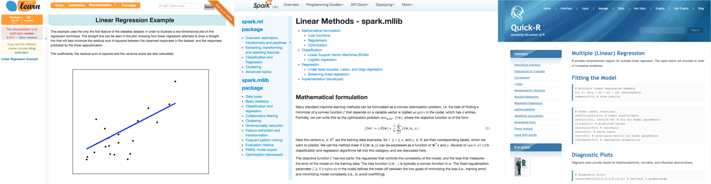<figcaption>Examples of linear regression implementations in Python, Scala, and R.</figcaption></figure></section><section data-transition-speed="fast"><h1>Powerful</h1><figure style="width: 40%" class="right">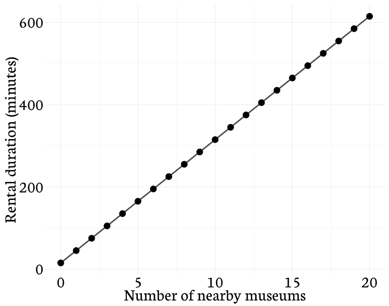<figcaption>Predicted rentals times based on the number of nearby musuems (duration = 15 + 30 * museums). </figcaption></figure><p>In prediction settings, linear models can outperform more complex nonlinear techniques, particularly when working with small training sets or sparse data. This is because regression is an averaging technique, making it less sensitive to missingness and extreme values.</p></section><section data-transition-speed="fast"><h1>Flexible</h1><p>Even in situations where linearity assumptions fail, regression can be applied on transformations of variables such as logarithms. </p></section><section data-transition-speed="fast"><h1>Mathematical foundations</h1><p>Let's walk through the foundations of regression with just one explanatory variable/<a href="http://en.wikipedia.org/wiki/Covariate">covariate</a>. Regression with just one covariate is called <a href="http://en.wikipedia.org/wiki/Simple_linear_regression">simple linear regression</a> (SLR). SLR has a simpler framework than multiple regression and is fundamental to understanding more complex models.</p></section><section data-transition-speed="fast"><h1>Mathematical foundations</h1><figure style="width: 40%" class="right"></figure><p>SLR describes the relationship between an outcome and a single predictor variable. The regession equation expresses how the average of the outcome variable changes over the range of the predictor variable. </p><p><i>e.g.</i> How does the expected number of rentals change as the number of nearby crosswalks changes?</p></section><section data-transition-speed="fast"><h1>Mathematical foundations</h1><p>Given $n$ observations of $x$ and $y$,</p>$ (x_1, y_1), (x_2, y_2), \ldots , (x_n, y_n) $<p>the model for a simple linear regression is expressed as</p>$ y_i = \beta_{0} + \beta_{1}x_i + \epsilon_i $<p class="fragment current-visible">Hey, kinda looks like $y = mx + b$ where $\beta_0$ is the intercept and $\beta_1$ is the slope of the line.<figure style="width: 30%" class="right"></figure></p></section><section data-transition-speed="fast"><h1>Which line is the best?</h1><p>How do we choose $\beta_0$ and $\beta_1$? With visual inspection alone, there seems to be several lines that could be drawn through the center of the points. We need an algorithm for standardizing and automating the process of finding the best one. </p></section><section data-transition-speed="fast"><h1>Errors</h1><p>Data points will not fall exactly on any straight line we choose, there will always be some error. The distance of a point from the regression line is called the residual error, $ \epsilon_i $. The errors are assumed to be independent and normally distributed with mean 0 and standard deviation $\sigma$.</p></section><section data-transition-speed="fast"><h1>Ordinary least squares ftw</h1><p>The method of <a href="http://en.wikipedia.org/wiki/Ordinary_least_squares">least squares</a> selects the line that minimizes the sum of the squares of the errors. $\epsilon_i$ is the error of the prediction line for each observation.</p>$ \epsilon_i = (y_i - \beta_{0} - \beta_{1}x_i) $<p></p>$ \epsilon_i^2 = (y_i - \beta_{0} - \beta_{1}x_i)^2 $<p></p>Choose $\beta_0$ and $\beta_1$ so that $\sum\limits_{i=1}^n\epsilon_i^2$ is minimized.</section><section data-transition-speed="fast"><h1>Intuition</h1><p>Each $y_i$ is an observed value of the outcome variable. $\beta_{0} + \beta_{1}x_i$ is the estimated, or expected, $y_i$ value. So when we minimize the sum of squared errors we're making $(observed - expected)^2$ as close to 0 as possible.</p></section><section data-transition-speed="fast"><section data-transition-speed="fast"><h1>Assumptions</h1><p>To safely apply linear regression without fear of weird results, some assumptions must be met:<ol><li>Linearity between the outcome and coefficients ($\beta$'s) </li><li>Independence of the errors (no <a href="http://en.wikipedia.org/wiki/Autocorrelation">autocorrelation</a>)</li><li>Constant variance (<a href="http://en.wikipedia.org/wiki/Homoscedasticity">homoscedasticity</a>) of the errors</li><li>Normality of errors</li></ol></p><p>We might violate some assumptions and it's application-dependent whether we should be concerned about those violations.</p></section><section data-transition-speed="fast"><h1>Diagnostic plots</h1><p>In R, if you plot a linear model object, it'll give you a nice collection of diagnostic plots for assessing model assumptions.</p><pre><code data-trim="data-trim" contenteditable="contenteditable" class="r">model = lm(rentals ~ crossing, data = data)
par(mfrow = c(2, 2)) # make 4 plots in 2 rows, 2 cols
plot(model)</code></pre></section></section><section data-transition-speed="fast"><h1>Interpretation</h1><p>Regression equations have a nice interpretation. The intercept $\beta_0$ is the mean value of $y$ when $x = 0$. The slope of the regression line, $\beta_{1}$, is the change in the mean of y for each unit change in x.</p></section><section data-transition-speed="fast"><h1>R regression output </h1><pre><code data-trim="data-trim" contenteditable="contenteditable">model = lm(rentals ~ crossing, data = data)
summary(model)

Call:
lm(formula = rentals ~ crossing, data = data)

Residuals:
    Min      1Q  Median      3Q     Max 
-51.815 -21.176  -8.394  13.765 126.969 

Coefficients:
            Estimate Std. Error t value Pr(>|t|)    
(Intercept) 27.53163    2.59354  10.615  < 2e-16 ***
crossing     0.49159    0.07031   6.992 4.92e-11 ***
---
Signif. codes:  0 ‘***’ 0.001 ‘**’ 0.01 ‘*’ 0.05 ‘.’ 0.1 ‘ ’ 1

Residual standard error: 29.54 on 183 degrees of freedom
Multiple R-squared:  0.2108,	Adjusted R-squared:  0.2065 
F-statistic: 48.88 on 1 and 183 DF,  p-value: 4.92e-11
</code></pre></section><section><h1>Assessing model quality</h1><p>We've discussed how regression is a tool for numerical prediction. When we use a model to make predictions, how do we know if the model is any good? To assess model quality, we quantify its <i>predictive accuracy</i>.</p></section><section data-transition-speed="fast"><section data-transition-speed="fast"><h1>Hold-out sets</h1><figure style="width: 45%" class="right">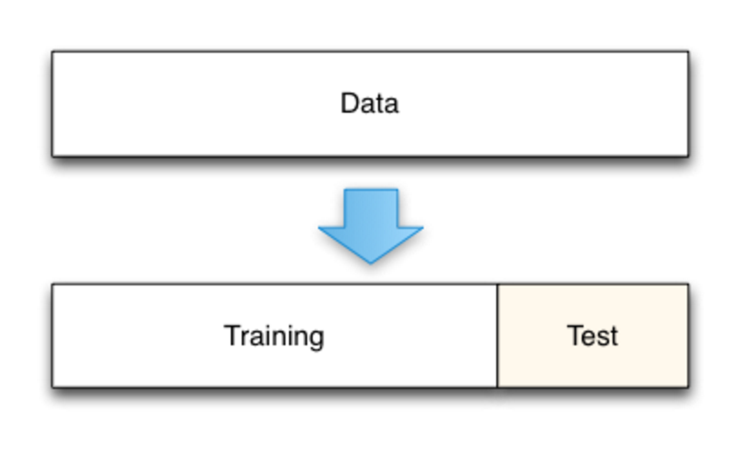<figcaption><a href="http://scott.fortmann-roe.com/docs/MeasuringError.html">Measuring error</a></figcaption></figure><p>We measure prediction quality by simulating new data coming in. We do that by dividing the original data into a <i>training set</i> and a <i>testing set</i>. The <i>training set</i> is used to fit and tune the predictive model. Then, the <i>testing set</i> is used to validate the predictions. Generally construction of the train and test sets should be done completely at random.</p></section><section data-transition-speed="fast"><h1>Quick heuristics for study design</h1><p> <ol class="left">large sample size<li>60% train</li><li>20% test</li><li>20% validation</li></ol><ol class="center">medium sample size<li>60% train</li><li>40% test</li></ol><ol class="right">small sample size<li>Do cross validation</li></ol></p></section></section><section data-transition-speed="fast"><section data-transition-speed="fast"><h1>Measuring model quality for continuous outcomes<p>$\text{mean absolute error (MAE)} = \\ \frac{1}{n} \sum\limits_{i=1}^n |prediction_i - observed_i|$</p><p>$\text{root mean squared error (RMSE)} = \\ \sqrt{\frac{1}{n} \sum\limits_{i=1}^n (prediction_i - observed_i)^2}$</p></h1></section><section data-transition-speed="fast"><h1>Which metric should I use?</h1><p>Just try them all, each metric has strengths and weaknesses.<ul><li>MSE and RMSE are sensitive to outliers.</li><li>Median absolute deviation is often more sensitive to outliers.</li></ul></p></section></section><section><h1>Linear Regression Resources</h1><ol><li><a href="http://setosa.io/ev/ordinary-least-squares-regression/">OLS regression Explained Visually</a></li><li><a href="https://class.coursera.org/predmachlearn-012">Practical Machine Learning</a> is a great Coursera course and is part of the data science specialization from Johns Hopkins.</li><li><a href="http://cran.r-project.org/web/packages/caret/vignettes/caret.pdf">A Short Introduction to the caret Package</a></li><li><a href="http://www.jstatsoft.org/v28/i05/paper">Building Predictive Models in R Using the caret Package</a></li></ol></section><section id="selection" data-background="images/data_miner3.jpg" data-background-size="cover"><h1>Model Selection</h1><h2>BI Tech CP303 - Data Mining</h2><h4><a href="https://github.com/erinshellman/BI-TECH-CP303/blob/master/projects/project%201/linear-regression-in-R.Rmd">R Tutorial </a></h4></section><section><h1>The full model</h1><p>We'll refer to the regression with all available predictors as a <i>full model</i>. The full model of the number of rentals contains 71 predictors, which is too many to meaningfully interpret and may be challenging to apply in practice.</p><p>Further, models with many predictors risk being over-parameterized, or <i>overfit</i>.</p></section><section><h1><a href="https://en.wikipedia.org/wiki/Overfitting">Overfitting</a></h1><p>Overfitting occurs when a model is trained too closely to a particular training set and as a result fails to generalize to new data. </p><figure style="width: 100%" class="right"><figcaption>Underspecified models like the one on the left are said to exhibit 'high bias.' That is, they are opinionated about the nature of the relationship between x and y, specifically that y changes linearly as a function of x. Overspecified models like the one on the right are said to exhibit 'high variance' that is, their predictive accuracy is highly variable because the model is overtrained to a specific data context. </figcaption></figure></section><section><section><h1>Simplifying the full model</h1><p>This week we'll discuss methods for reducing model size while maintaining prediction accuracy that will make the final model practical to apply and that are not overfit.</p><ol><li><i>Reduce predictors</i><ul><li>combination of features</li><li>feature selection</li></ul></li><li><i>Regularization</i> - keep all predictors, but shrink the parameter values<ul><li>ridge regression</li><li>lasso</li></ul></li></ol></section><section data-transition-speed="fast"><h1><a href="http://en.wikipedia.org/wiki/Curse_of_dimensionality">The curse of dimensionality</a></h1><p>Linear regression works well when the number of observations, $n$, is larger than the number of predictors, $p$. In a data mining context we sometimes have data where $p >> n$. An example of this from the biomedical science is microarray technology. One tissue sample can produce over 50,000 observations making $p$ orders of magnitude larger than $n$. </p></section><section data-transition-speed="fast"><h1></h1><p>The "curse of dimensionality" is not a problem of high-dimensional data, but a joint problem of the data and the algorithm being applied. It arises when the algorithm does not scale well to high-dimensional data, typically due to needing an amount of time or memory that is exponential in the number of dimensions of the data.</p></section></section><section data-transition-speed="fast"><h1>Combining like features</h1><p>The bikeshare data set includes information about nearby amenities like the number of restaurants, statues, parking lots and cafes. Since we're mostly working with counts, one simple way to reduce the number of variables is to combine like features. </p><pre><code data-trim="data-trim" contenteditable="contenteditable" class="r">nightlife = bar + club + pub + nightclub 
tourism = tourism_artwork + tourism_hotel + tourism_information
</code></pre></section><section data-transition-speed="fast"><h1>Subset selection</h1><p>Subset selection methods use OLS regression, but limit the number of predictors $k$ allowed to remain in the model. They iteratively add dor remove predictors to the model until $k$ predictors are included. </p></section><section data-transition-speed="fast"><h1>Forward and backward selection</h1><ul><li><i>Forward selection</i> starts with the intercept and sequentially adds predictors to the model.  </li><li><i>Backward selection</i> starts with the full model and sequentially deletes predictors that have the least contribution to model fit.</li></ul></section><section data-transition-speed="fast"><h1>How should we set parameter values?</h1><p>Both forward and backward selection requires that we specify a parameter value, $k$. but how do we choose? Cross validation!</p></section><section id="cross_validation" data-transition-speed="fast"><h1>Use <a href="http://en.wikipedia.org/wiki/Cross-validation_(statistics)">cross validation</a> to determine the best parameter values</h1><figure style="width: 30%" class="right"><figcaption><a href="http://scott.fortmann-roe.com/docs/MeasuringError.html">Accurately Measuring Model Prediction Error</a></figcaption></figure><p>Cross-validation works by splitting the data up into sets of $n$ folds. Your model building and error estimation procedure is then repeated $n$ times. After completing a 5-fold cross-validation you'd have 5 error estimates and can average to obtain a robust estimate of the prediction error.</p></section><section data-transition-speed="fast"><h1>Cross Validation with caret</h1><figure style="width: 80%">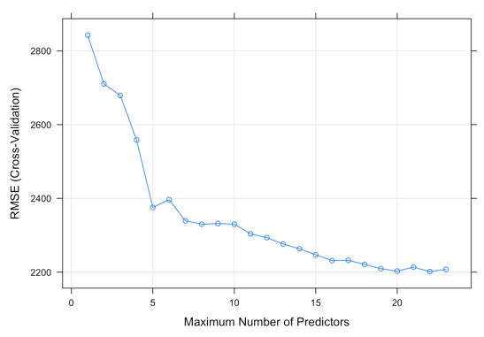<figcaption>This plot shows how the RMSE changes as the parameter value $k$ changes. </figcaption></figure></section><section data-transition-speed="slow"><h1>Subset selection summary</h1><figure style="width: 40%" class="right">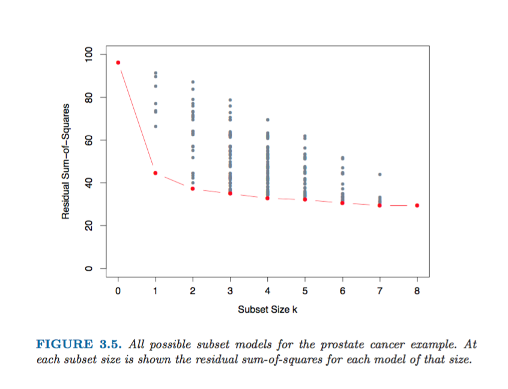<figcaption><a href="http://statweb.stanford.edu/~tibs/ElemStatLearn/">Elements of Statistical Learning</a></figcaption></figure><p>After reducing the full model using subset selection, the final model is interpretable and potentially has better predictive accuracy than the full model. However we got there by throwing predictors out of the model.        </p><p>Selection methods do not guarantee that the subsets from the stepwise procedures contain the same variables or even be the "best" performing subset. There's also the possibility of multiple, equally good models.</p></section><section data-transition-speed="fast"><h1>Multi-collinearity</h1><p>In contexts where there are many predictors, some of them are likely correlated. Fitting regression with correlated predictors causes the model to be highly variable and produces unstable estimates of the coefficients. </p><p>When predictors are correlated they are said to exhibit <a href="https://en.wikipedia.org/wiki/Multicollinearity">multicollinearity</a>, and in general it's something we want to avoid.</p></section><section data-transition-speed="fast"><h1>Variance inflation</h1><p>Take, for example, the regression model:
$\text{num_rentals} = \beta_0 + \beta_1*\text{embassy} + \beta_2*\text{diplomatic_embassy}$.</p><p>These two predictors are virtually the same, have a correlation of 0.99, and models that include both of them display highly unstable coefficient values.</p></section><section data-transition-speed="fast"><h1>Variance inflation</h1><pre><code data-trim="data-trim" contenteditable="contenteditable" class="r">summary(lm(num_rentals ~ embassy + diplomatic_embassy, data = bikeshare))

Call:
lm(formula = num_rentals ~ embassy + diplomatic_embassy, data = bikeshare)

Residuals:
    Min      1Q  Median      3Q     Max 
-5857.3 -2112.1  -919.1  1118.9 24867.9 

Coefficients:
                   Estimate Std. Error t value Pr(>|t|)    
(Intercept)         2668.14      99.85  26.721   <2e-16 ***
embassy             2168.61    1102.25   1.967   0.0494 *  
diplomatic_embassy -1260.87    1113.48  -1.132   0.2578    
---
Signif. codes:  0 ‘***’ 0.001 ‘**’ 0.01 ‘*’ 0.05 ‘.’ 0.1 ‘ ’ 1

Residual standard error: 3105 on 998 degrees of freedom
Multiple R-squared:  0.0297,	Adjusted R-squared:  0.02775 
F-statistic: 15.27 on 2 and 998 DF,  p-value: 2.931e-07
</code></pre></section><section data-transition-speed="fast"><h1>Shrinkage methods</h1><p>Coefficient shrinkage methods penalize coefficient values so they do not exceed some threshold.</p></section><section data-transition-speed="fast"><h1>Ridge regression</h1><p>Ridge regression <i>shrinks</i> regression coefficients by penalizing based on the coefficient size. In ordinary least squares, we picked $\beta$s that minimize our squared errors. Now we do that, but include a penalty parameter.</p><p>$ \epsilon_i^2 = \sum\limits_{i} (y_i - x^T_i\beta)^2 + \lambda\sum\limits_{j = 1}^p \beta_j^2 $ </p><p class="fragment current-visible">or, OLS + penalty</p></section><section data-transition-speed="fast"><section data-transition-speed="fast"><h1>Choosing $\lambda$</h1><figure style="width: 35%" class="right"><figcaption><a href="http://statweb.stanford.edu/~tibs/ElemStatLearn/">The Elements of Statistical Learning</a></figcaption></figure><p>$\lambda$ is a complexity parameter that controls the amount of coefficient shrinkage. The penalty parameter $\lambda$ controls the level of shrinking. $\lambda = 0$ will give you exactly the same coefficients as OLS. Beyond that, the choice of $\lambda$ will depend on the data and model, and we'll use cross validation to determine the best value.</p></section></section><section data-transition-speed="fast"><section data-transition-speed="fast"><h1>Lasso</h1><p>Like ridge regression, lasso is a shrinkage method with a major difference.</p><p>$\epsilon_i^2 = \sum\limits_{i} (y_i - x^T_i\beta)^2$ subject to $\sum\limits_{j = 1}^p |{\beta_j}| \leq t$   </p></section><section data-transition-speed="fast"><h1>Lasso</h1><p>Making t sufficiently small will cause some of the coefficients to be exactly zero, making the lasso method similar to a subset selection.</p></section></section><section data-transition-speed="fast"><h1>Choosing $t$</h1><figure style="width: 35%" class="right"><figcaption><a href="http://statweb.stanford.edu/~tibs/ElemStatLearn/">The Elements of Statistical Learning</a></figcaption></figure><p>If $t_0 \geq \sum\limits_{j = 1}^p |\beta_j|$, the lasso estimates and the OLS estimates are identical. If $t = t_0/2$ then the least squares coefficients are shrunk by about 50% on average. Once again we can pick the $t$ that gives the lowest test error, and we'll learn how to do that in <i>caret</i>.</p></section><section data-transition-speed="slow"><h1>Which method should I use?</h1><p>We discussed 3 methods for model selection, forward/backward selection, ridge regression, and the lasso, but which should you use and why? As usual, your choice in method is typically informed from your application. </p><p>If model size is a practical concern then forward/backward selection with a sensible $k$ could be a good choice. For example, if the data you're working with is quite expensive to collect like human surveys then in the future you'd like to reduce the number of variables to record.</p><p>If predictors come cheap and you want to tune the regression for better performance, then consider ridge regression or the lasso. For example maybe your data are performance metrics from webserver logs and data collection is simple.</p></section><section data-transition-speed="slow"><h1>Constructing an analysis plan</h1></section><section data-transition-speed="fast"><h1>Model Selection Summary</h1><ol><li><i>Full models</i> can be impractical and lead to overfitting.</li><li>Subset selection methods add, remove, or both add and remove predictors sequentially depending on the improvements in fit.</li><li>Skrinkage methods penalize coefficient size to </li><li>Subset selection and shrinkage methods all require additional parameters to work, <i>e.g.</i> $k$, $\lambda$, and $t$. Cross-validation can be used to identify optimal values of required parameters.</li></ol></section><section><h2>Feature Selection Resources</h2><ol><li><a href="http://topepo.github.io/caret/training.html">Modeling training and tuning with caret</a></li></ol></section><section id="logistic" data-background="images/data_miner4.jpg" data-background-size="cover"><h1>Classification with Logistic Regression </h1><h2>BI Tech CP303 - Data Mining</h2><h4><a href="https://github.com/erinshellman/BI-TECH-CP303/blob/master/projects/project%202/logistic-regression-in-R.Rmd">R tutorial</a></h4></section><section id="classification"><h1>Classification</h1><p>We use classification techniques when we're trying to assign something to a category.</p><ul><li>Spam or not spam</li><li>Diseased or not diseased</li><li>Fraud or not fraud</li></ul><p class="fragment current-visible">In our case, the outcome $y$ is either 0 or 1: $y \in{\{0, 1\}}$</p></section><section data-transition="linear" data-transition-speed="fast"><h1>Identifying spam</h1><p>We could build a spam classifier with a linear regression predicting whether a message is spam. The predictor is the number of occurrences of the character '$' in a message.</p><figure style="width: 50%; margin: 0 auto"></figure></section><section data-transition="linear" data-transition-speed="fast"><h1>Identifying spam</h1><figure style="width: 50%" class="right"></figure><p>Then to predict the class, create a threshold on $y$:<ul class="fragment"><li>if $x \geq 8$, spam</li><li>if $x < 8$, not spam</li></ul></p><p class="fragment current-visible">Messages with more than eight '$'s, will be labeled as spam.</p></section><section data-transition="linear" data-transition-speed="fast"><h1>Identifying spam</h1><p>What if an extreme value is observed later? The current rule isn't violated, but the refit model begins to misclassify.</p><figure style="width: 45%; margin: 0 auto" class="left"></figure><figure style="width: 45%; margin: 0 auto" class="right"></figure></section><section data-transition-speed="fast"><section><h1>We need a new tool</h1><p>In binary classification the outcome, $y$, can only take the values $0$ or $1$, but linear regression produces predictions for $y$ that could be much larger than $1$ and much smaller than $0$. To make binary predictions in the last example, we imposed a threshold at $y=0.50$, but that threshold is arbitrary. Our previous prediction tool, linear regression, won't work well for classification problems. Instead we can use another type of regression called, <a href="http://en.wikipedia.org/wiki/Logistic_regression">logistic regression</a>.</p></section><section data-transition="linear" data-transition-speed="fast"><h1>History of GLM</h1><p>Articulated in Nelder and Wedderburn in 1972 paper in Journal of the Royal Statistical Society.</p><p>GLMs are composed of three parts:<ol><li>An exponential family model for the response</li><li>A systematic component via a linear predictor</li><li>A link function that connects the means of the response to the linear predictor</li></ol></p></section><section data-transition-speed="fast"><h1>Logistic regression GLM parts</h1><ol><li>Exponential family model:</li><li>Linear predictor: $ \eta_{i} = \sum_{k = 1}^{p} X_{ik}\beta_k $</li><li>Link: $ g(\mu) = \eta = \log{\mu \over 1-\mu} $</li></ol></section></section><section data-transition-speed="fast"><h1>Deriving logistic regression<p><b>Goal:</b> $0 \leq predictions \leq 1$</p><p class="fragment">$y = \beta_0 + \beta_{1}x$ &#10143 Simple Linear Regression</p><p class="fragment">How can we transform the right hand size to produce values that are between 0 and 1, like the outcome?<p class="fragment">$g(z) = \frac{1}{1+e^{-z}}$ &#10143 Logistic (or sigmoid) function</p></p><p class="fragment">$z = \beta_0 + \beta_{1}x$</p><p class="fragment">$y = \frac{1}{1 + e^{-(\beta_0 + \beta_{1}x)}}$ &#10143 Logistic Regression</p></h1></section><section data-transition-speed="fast"><h1>The logistic function $g(z) = \frac{1}{1+e^{-z}}$</h1><figure style="width: 65%; margin: 0 auto"></figure></section><section data-transition-speed="fast"><h1>The logistic function $g(z) = \frac{1}{1+e^{-z}}$</h1><figure style="width: 65%; margin: 0 auto">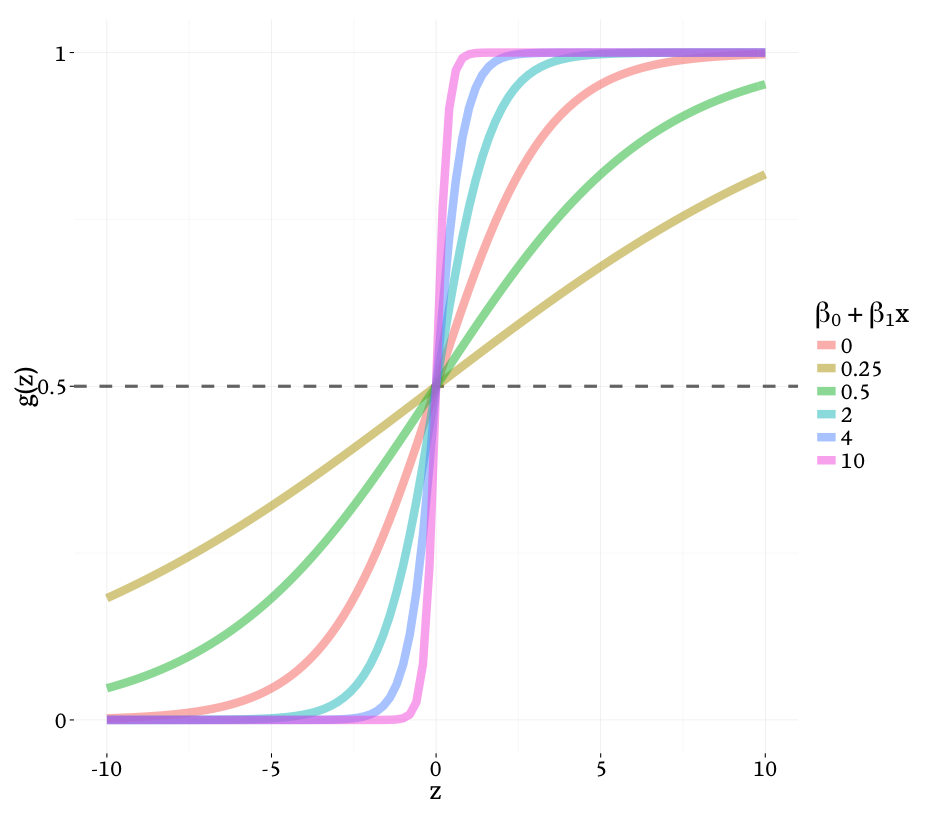</figure></section><section data-transition-speed="fast"><h1>How to interpret predictions?</h1><p>Model predictions represent the probability that $y = 1$ given the data $x$.</p><p><i>e.g.</i> The probability of a message being spam, given the number of $\$'s$. If I get a value of 0.70 from my model, then $p(\text{message is spam}\mid 10 \text{\$'s}) = 0.70$.</p></section><section data-transition-speed="fast"><h1>How do we decide the class?</h1><p>The <i>decision boundary</i> separates the region where the model predicts $y = 1$ from the region where the model predicts $y = 0$.</p><ul><li>If $y \geq 0.5$, then the message is spam</li><li>If $y < 0.5$, then the message is not spam </li></ul><div><figure style="width: 45%" class="left"></figure><figure style="width: 45%" class="right"></figure></div></section><section data-transition-speed="fast"><h1>How do we decide the class?</h1><figure style="width: 35%; margin: 0 auto" class="right"></figure><p>$p(\text{spam}) = -0.80 + 0.10*\text{number of \$s}$</p><p>predict y = 1, if: $-0.80 + 0.10x \geq 0$</p><p>$0.10x \geq 0.80$</p><p>$x \geq 8$</p><p>The line at $x = 8$ is called the <i>decision boundary</i>.</p></section><section data-transition-speed="fast"><h1>Bot <i>or</i> Not?</h1><p>Like many Internet giants Twitter makes money by selling ads, but they’ve got an insidious infestation eroding their advertising credibility: bots. More than 23 million of them. Twitter bots are automatons living in the Twittersphere and ranging wildly in capability. At their most complex they use speech patterns that can, at times, fool humans. </p><p>When advertisers pay for engagement, they aren’t interested in a four-hour flame war between a gamergate bot and a Kanye bot. When advertisers analyze social data they want to be sure the numbers are the result of human activity. </p></section><section data-transition-speed="fast"><h1>Bot <i>or</i> Not?</h1><p>For project 2, we'll use Twitter user data to build a classifier for identifying bots.</p></section><section data-transition-speed="fast" data-background="images/not_a_bot.png" data-background-size="cover"><h1 class="right">Not a bot...</h1></section><section data-transition-speed="fast" data-background="images/twitter_bot.png" data-background-size="cover"><h1 class="right">Spot a bot!</h1></section><section><h1>Logistic Regression Resources</h1><ol><li><a href="http://www.ats.ucla.edu/stat/r/dae/logit.htm">R Data Analysis Examples: Logit Regression</a></li><li><a href="http://www.ats.ucla.edu/stat/mult_pkg/faq/general/odds_ratio.htm">FAQ: How do I interpret odds ratios in logistic regression?</a></li><li><a href="http://rpubs.com/ryankelly/ml_logistic">Classification tutorial in R</a> from Ryan Kelly</li></ol></section><section id="trees" data-background="images/data_miner5.jpg" data-background-size="cover"><h1>Classification with Trees</h1><h2>BI Tech CP303 - Data Mining</h2><h4><a href="https://github.com/erinshellman/BI-TECH-CP303/blob/master/projects/project%202/classification-trees-in-R.pdf">R Tutorial</a></h4></section><section data-transition-speed="slow"><h1>Classification with trees</h1><figure style="width: 45%" class="right">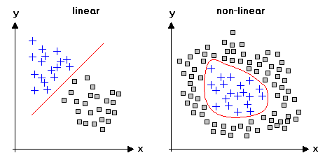</figure><p>Tree-based methods are a conceptually simple and powerful method for classification (and regression). They work well in non-linear settings where regression can underperform.</p></section><section data-transition-speed="fast"><h1>Classification with trees</h1><figure style="width: 45%" class="right"></figure><p>Besides working well in non-linear settings, an advantage of decision trees is their interpretability. </p><p>For example in a clinical setting, they mirror the way that a clinician might think when assessing patient disease risk.</p></section><section data-transition-speed="fast"><h1>The construction of trees is iterative</h1><figure style="width: 35%; margin: 0 auto" class="right"><figcaption>Visualization of a series of splits in two-dimensions. <a href="http://webee.technion.ac.il/people/rmeir/BoostingTutorial.pdf">Source.</a></figcaption></figure><p>Decisions trees are created by interatively splitting predictors to create increasingly homogenous groups. The basic algorithm can be summarized by the following steps: </p><p>Start with all predictors and repeat:<ol><li>Find the variable and split that best "separates" the outcome, <i>i.e.</i> creates homogenous groups</li><li>Divide the data into two groups on that split</li><li>Stop when the groups are too small or sufficiently homogenous</li></ol></p></section><section data-transition-speed="fast"><h1>How to determine the splitting point?</h1><p>The first step in our algorithm is to determine the predictor that best splits the data into homogenous groups (sometimes refered to as <i>node purity</i>). There are many measures of node purity, but two common ones we'll see used in caret:</p><ul><li>Misclassification</li><li>Gini Purity</li></ul></section><section data-transition-speed="fast"><h1>Misclassification purity</h1><p>This measure of node purity estimates the probability </p><p>$misclassification = 1 - p(y = 1), \text{if y = 1 is the reference class.}$</p><p>A misclassification error of 0 implies perfect purity and 0.5 implies an even mixture of both classes (<i>i.e.</i> bot and not) and no 'purity.'</p></section><section data-transition-speed="fast"><h1>Gini Impurity</h1><p>Gini impurity is a measure of how often an observation would be incorrectly classified if it was randomly labeled according to the distribution of classes in the split. Gini impurity is computed by summing the probability of each item being chosen times the probability of a classification mistake, <i>i.e.</i> $1 - prob(\text{random guess is correct})$. </p><p>$\text{Gini Impurity} = \sum_{i=1}^{k} p_i(1-p_i) = 1 - \sum_{i=1}^{k} p_i^2$ where $k$ is the class (<i>e.g.</i> 'bot', 'not')</p><p>A gini impurity of 0 indicates all observations in the node fall into a single category.</p></section><section data-transition-speed="fast"><h1>Example splits</h1><p>Suppose we had two candidate splits:</p><figure style="width: 45%; margin: 0 auto" class="left">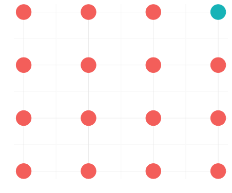<figcaption>$misclassification = 1 / 16 = 0.06$ $gini = 1 - [(1 / 16)^2 + (15 / 16)^2] = 0.12$</figcaption></figure><figure style="width: 45%; margin: 0 auto" class="right">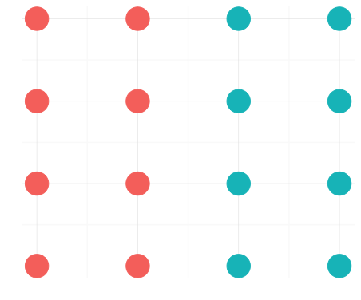<figcaption>$misclassification = 8 / 16 = 0.50$ $gini = 1 - [(8 / 16)^2 + (8 / 16)^2] = 0.50$</figcaption></figure></section><section data-transition-speed="fast"><figure style="width: 80%; margin: 0 auto">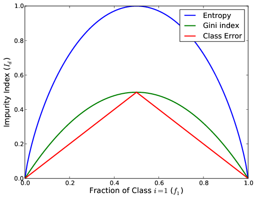<figcaption></figcaption></figure></section><section data-transition-speed="slow"><h1>Controlling tree complexity</h1><p>Tree methods can suffer from <a href="http://en.wikipedia.org/wiki/Overfitting">overfitting</a>, which occurs when our model is too tuned to the training data. When models are overfit they generalize poorly and exhibit high variance and poor prediction accuracy on new data.</p></section><section data-transition-speed="fast"><h1><a href="https://onlinecourses.science.psu.edu/stat557/node/93">Pruning</a></h1><figure style="width: 45%" class="right"></figure><p>When we were doing linear regression, we started by fitting the <i>full model</i>, which sometimes had the lowest RMSE, but was also prohibitively complex. Tree methods can suffer a similar weakness in that resulting trees tend to be large and too complex. Just like regression, a smaller tree with fewer splits often leads to lower variance, easier interpretation and lower test errors, at the cost of a little bias.</p></section><section data-transition-speed="fast"><h1>Complexity penalty, $Cp$ </h1><p>The complexity penality ranges from 0 to 1 and penalizes the number of terminal nodes in the tree. A high value of $Cp$ corresponds to a decreased likelihood of a branch split and lower $Cp$ penalizes less dramatically. In <i>caret</i>, the <i>train()</i> function will identify an optimal $Cp$ for us.</p></section><section data-transition-speed="slow"><h1>Reducing variance</h1><p>Single trees are simple to compute and pretty easy to understand, but they are susceptible to high variance when tested on new data. Methods such as boosting, bagging and random forests have been developed to overcome this problem.</p></section><section data-transition-speed="fast"><h1>Boosting</h1><figure style="width: 45%" class="right">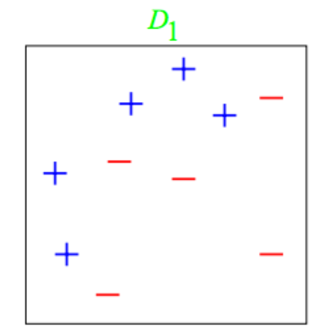<figcaption></figcaption></figure><p>Boosting works by combining the output of many potentially weak classifiers to produce a powerful consensus tree. A weak classifier is one whose error rate is only slightly better than random guessing.</p><p>Let's use this toy example to walk-through the process.</p></section><section data-transition-speed="fast"><figure style="width: 50%">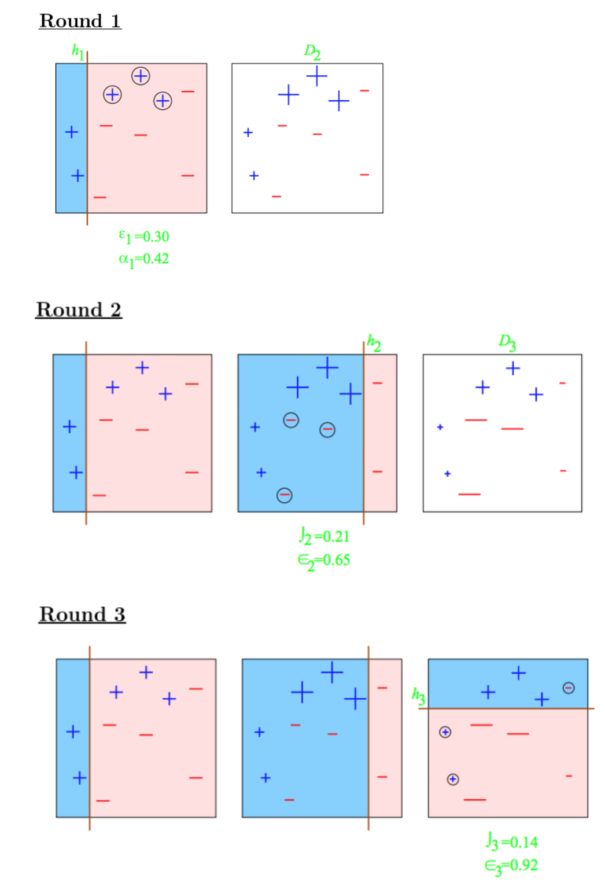<figcaption></figcaption></figure></section><section data-transition-speed="fast"><h1></h1><figure style="width: 100%" class="right">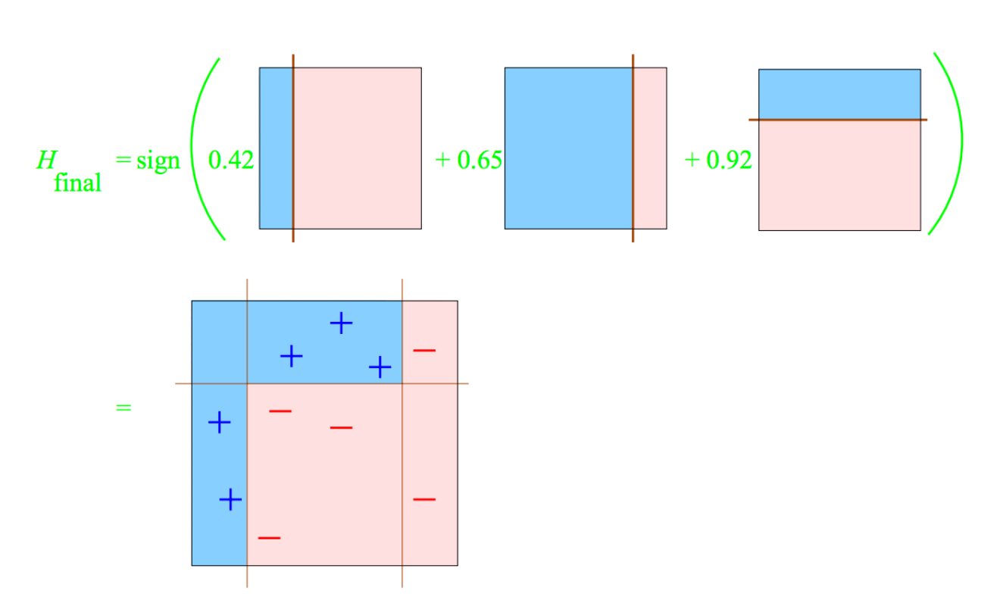<figcaption></figcaption></figure></section><section data-transition-speed="fast"><h1><a href="http://en.wikipedia.org/wiki/AdaBoost">AdaBoost</a></h1><figure style="width: 45%" class="right"><figcaption><a href="http://statweb.stanford.edu/~tibs/ElemStatLearn/">The Elements of Statistical Learning</a></figcaption></figure><p>Short for adaptive boosting, AdaBoost is one of the most popular boosting algorithms. AdaBoost is adaptive in the sense that subsequent weak learners are boosted in favor of the cases previously misclassified.</p></section><section data-transition-speed="fast"><h1>Bootstrap aggregating (bagging)</h1><figure style="width: 40%" class="right"></figure><p>Bagging procedures work by randomly resampling data and refitting the model multiple times. The final model is determined by either averaging or taking a <i>majority vote</i> to form a single model. </p><p>The goal of bagging is to reduce variance by averaging many models.</p></section><section data-transition-speed="fast"><h1>Random Forest</h1><p>Random forest is a special type of bagging algorithm that resamples both the variables and the data used to fit the model. It's one of the best performing classifiers.</p><figure style="width: 100%">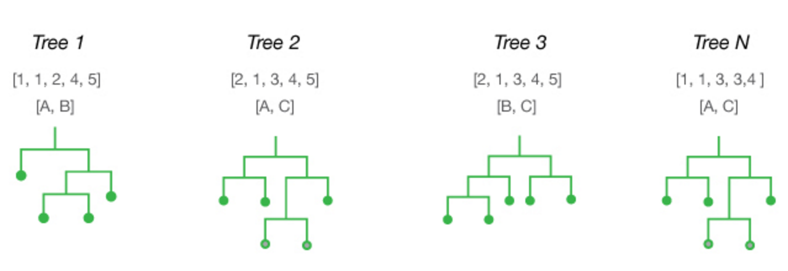<figcaption>Assume you've got a data set with 5 rows labeled: [1, 2, 3, 4, 5] and three predictors: [A, B, C]. The diagram above shows 4 hypothetical trees that could be constructed from those inputs. Note that the observations are sampled with replacement so some rows occur multiple times. The number of predictors to sample in each iteration is 2, rather than the 3 available in total. <a href="http://www.thefactmachine.com/random-forests/">Source.</a></figcaption></figure></section><section><h1>Tree Resources</h1><ol><li><a href="https://rpubs.com/ryankelly/dtrees">Tree-based Methods</a>. A great tutorial from Ryan Kelly.</li><li><a href="https://en.wikipedia.org/wiki/Decision_tree_learning">Decision Tree Learning</a></li><li><a href="https://www.coursera.org/learn/practical-machine-learning/">Johns Hopkins Data Mining course notes</a>. Great intro to decision trees.</li><li><a href="http://webee.technion.ac.il/people/rmeir/BoostingTutorial.pdf">Boosting Tutorial</a> by Ron Meir.</li><li><a href="http://www.statsoft.com/Textbook/Classification-Trees">Classification Trees overview</a> from Statsoft</li></ol><figure style="width: 35%; margin: 0 auto"></figure></section><section id="rules" data-background="images/data_miner6.jpg" data-background-size="cover"><h1>Association rule mining</h1><h2>BI Tech CP303 - Data Mining</h2><h4><a href="https://github.com/erinshellman/BI-TECH-CP303/blob/master/projects/project%203/association-rules-in-R.Rmd">R Tutorial</a></h4></section><section><h1>Farewell to supervised learning</h1><p>At this point you've built models to predict numerical and binary outcomes. Your models were based on a training set and predictive accuracy was assessed with a testing set. This class of problems is called <i>supervised learning</i> because we observe the true value of the outcome, and those observations serve as a "teacher" for that model, providing it the correct answer and allowing us to compute measures of accuracy. <i>e.g.</i> RMSE and accuracy measurements.</p></section><section data-transition-speed="fast"><h1><a href="http://en.wikipedia.org/wiki/Unsupervised_learning">Unsupervised Learning</a></h1><p>In <i>unsupervised learning</i> applications, the goal is to find hidden structure in data when we do not observe an outcome. Since we have no observed outcome to compare our predictions with, we cannot compute an error to measure the predictive accuracy of our models. This distinguishes unsupervised from supervised learning.</p></section><section data-transition-speed="fast"><h1>Association Rule Mining</h1><p>Association rule mining is a powerful and popular tool for discovering patterns between variables in large transactional databases. The goal is to find recurring associations. </p></section><section data-transition-speed="fast"><h1>Market basket analysis</h1><p>In a retail context, association rule mining is often referred to as "market basket" analysis. In this context the observations are sales transactions, such as those occurring at the checkout counter of a store.</p><p>The resulting association rules can be very valuable for use in cross-marketing in promotions, catalog design, consumer segmentation based and product recommendation.</p></section><section data-transition-speed="fast"><h1>Formalizing market basket analysis</h1><p>$I = \{item_1, item_2, \dots, item_n\}$ is a collection of binary attributes called <i>items</i>.</p><p>$D = \{t_1, t_2, \dots, t_m\}$ is a set of uniquely labeled transactions in the dataset.</p><p><i>Rules</i> take the form $X \Rightarrow Y$ where $X, Y \subseteq I$</p></section><section data-transition-speed="fast"><h1>Grocery store example</h1><p>The pool of items is $I = \{milk, bread, butter, beer\}$</p><div><p>The transaction dataset:</p><table class="table-hover"><thead><tr><th>Transaction Id</th><th>Itemsets</th></tr></thead><tbody><tr><td class="number">1</td><td class="number">milk, bread</td></tr><tr><td class="number">2</td><td class="number">bread, butter</td></tr><tr><td class="number">3</td><td class="number">beer</td></tr><tr><td class="number">4 </td><td class="number">milk, bread, butter</td></tr><tr><td class="number">5 </td><td class="number">bread, butter</td></tr></tbody></table></div></section><section data-transition-speed="fast"><h1>Rules</h1><p>$X \Rightarrow Y$</p><p>The itemsets on the left-hand-side (LHS) are called the <i>antecedent</i> and the itemsets on the right-hand-side (RHS) are called the <i>consequent</i> of the rule.</p></section><section data-transition-speed="fast"><h1>Filtering rules</h1><p>To identify interesting rules from all possible combinations, we need to construct a measure of significance. The most common constraints are imposed with the <i>support</i>, <i>confidence</i>, and <i>lift</i>. </p><p>Association rules are rules which surpass a user-specified minimum support and minimum confidence threshold.</p></section><section data-transition-speed="fast"><h1><a href="http://en.wikipedia.org/wiki/Association_rule_learning#Useful_Concepts">Support</a></h1><p>The <i>support</i> of an itemset is the proportion of transactions in the data which contain the itemset.</p><p>In the grocery example, the itemset $\{milk, bread\}$ occurs in 2 of 5 transactions, so it has a support of 2/5 = 0.4 = 40%. </p><p>What is the support for $\{bread, butter\}$?</p></section><section data-transition-speed="fast"><h1>Confidence</h1><p>The <i>confidence</i> of a rule, $X \Rightarrow Y$, answers the question "for what proportion of the transactions does this rule apply?", and is an estimate of the conditional probability $p(Y|X)$.</p><p>$confidence(X \Rightarrow Y) = \frac{\text{proportion of transactions containing the itemsets in X and Y}}{\text{Proportion of transactions containg the itemset X}}$</p></section><section data-transition-speed="fast"><h1>Confidence</h1><p>The rule $\{milk, bread\} \Rightarrow \{butter\}$ has a confidence of 0.2/0.4 = 0.5, meaning that for 50% of the transactions containing $\{milk, bread\}$ the rule holds.         </p></section><section data-transition-speed="fast"><h1>Constraining rules</h1><p>When association rules are constructed, they must satisfy both minimal support and confidence thresholds, however even with these requirements we're often left with a long list of candidate rules. We can further reduce the pool of rules using the <i>lift</i> metric.</p></section><section data-transition-speed="fast"><h1>Lift</h1><p>$lift(A \Rightarrow B) = \frac{support(A \cup B)}{support(A) \times support(B)}$</p><p>Lift is the deviation in the support of the whole rule from the support expected under independence given the supports of the LHS and the RHS. Larger lift indicates stronger associations.</p></section><section data-transition-speed="fast"><h1>Interpreting lift</h1><p>A lift of 1 indicates that the association between the LHS and RHS is exactly what we'd expect if there is no relationship between the itemsets on either side, <i>i.e.</i> the itemsets are independent. Imagine you're at the grocery story buying your bread, butter and milk, and you remember that you need vacuum cleaner bags.</p><p>Lift values greater than 1 indicate that there's some depedence between the itemsets. For example chips and salsa, or beer and pretzels.</p></section><section data-transition-speed="fast"><h1>The <a href="http://en.wikipedia.org/wiki/Apriori_algorithm">apriori algorithm</a></h1><figure style="width: 45%" class="right"></figure><p>The <i>apriori</i> algorithm is an iterative, breadth-first approach to finding frequent itemsets and deriving association rules from them.</p></section><section data-transition-speed="fast"><h1>College Scorecard Data</h1><p>In project 3 we'll use a dataset released from the White House last year called the College Scorecard. The purpose of the scorecard is to give students and parents more information for making college decisions and includes data about colleges (<i>e.g.</i> size, composition of student body, common majors) and data about labor market outcomes (<i>e.g.</i> median earnings after graduation, unemployment rates, and debt).  </p></section><section><h1>Association Rules Resources</h1><ol><li><a href="http://www.rdatamining.com/examples/association-rules">Association Rule Example</a></li><li><a href="http://www.rdatamining.com/docs/association-rule-mining-with-r">Association Rule Mining in R</a></li><li><a href="http://www.salemmarafi.com/code/market-basket-analysis-with-r/">Market Basket Analysis with R</a></li></ol></section><section id="clustering" data-background="images/data_miner7.jpg" data-background-size="cover"><h1>Clustering</h1><h2>BI Tech CP303 - Data Mining</h2><h4><a href="https://github.com/erinshellman/BI-TECH-CP303/blob/master/projects/project%203/clustering-in-R.Rmd">R Tutorial</a></h4></section><section data-transition-speed="fast"><h1>Clustering</h1><figure style="width: 35%" class="right">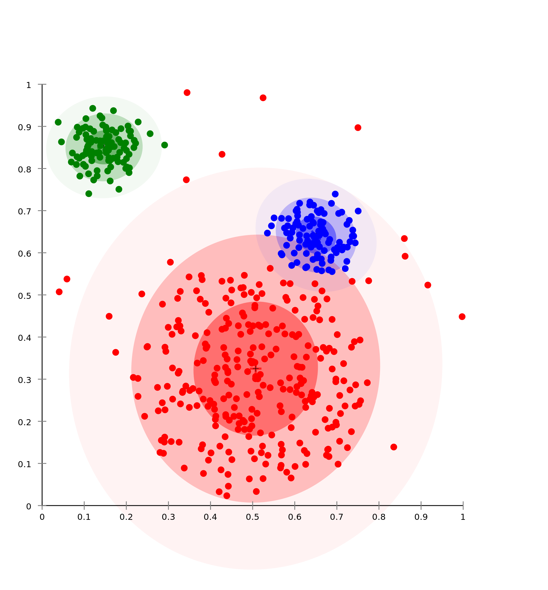</figure><p>The goal of cluster analysis (or segmentation) is to group observations into subsets (clusters) such that observations within a cluster are more closely related to one another than observations in different clusters. </p><p>Clustering is accomplished by grouping observations according to a <a href="http://en.wikipedia.org/wiki/Distance">distance metric</a>.</p></section><section data-transition-speed="fast"><h1>Discovering categories </h1><p>Often cluster analysis is used to identify distinct subgroups in data. Retailers often use shopper "personas" to represent patterns of shopping, <i>e.g.</i> Spendy Sally and Cheap Chad. Clustering techniques could be applied in that context to identify categories of shoppers.</p></section><section data-transition-speed="fast"><h1>Defining similarity is the key</h1><p>The essential component of all clustering techniqiues is a measure of similarity (or dissimilarity) between observations. Once the measure of similarity is defined, the clustering method groups the observations based on the measure of similarity.</p></section><section data-transition-speed="fast"><h1><a href="http://en.wikipedia.org/wiki/K-means_clustering">$k$-means Clustering</a></h1><p>One of the most popular clustering algorithms, the goal of $k$-means clustering is to group $n$ observations into $k$ clusters. $k$-means has essentially two steps: </p><ol><li><i>Cluster assignment step</i> - assign all observations to one of the centroids based on which is closest.</li><li><i>Centroid shift step</i> - move the centroids to the average value of the points within the cluster.</li><li>Stop when the centroids stop moving.</li></ol></section><section data-transition-speed="fast"><h1>$k$-means Algorithm</h1><figure style="width: 25%" class="left"><figcaption>1. Randomly initialize K = 3 cluster centroids (red, green, and blue). </figcaption></figure><figure style="width: 25%" class="left"><figcaption>2. Assign each observation to a cluster based on which centroid they're nearest.</figcaption></figure><figure style="width: 25%" class="left"><figcaption>3. Find the mean of the clusters and move the K centriods to those means.</figcaption></figure><figure style="width: 25%" class="left"><figcaption>4. Repeat steps 2 and 3 until the centroids stop moving.</figcaption></figure></section><section data-transition-speed="fast"><h1>Selecting $k$</h1><p>The number of centroids, $k$, is a required input for the $k$-means algorithm. The choice of the size of $k$ depends on the goal. For segmentation applications, $k$ is typically defined by the context of the problem. For example, a salesteam may have $k$ members, and the goal is to assign each salesperson a set of leads such that the customers assigned to each are similar as possible. But often $k$ is unknown.</p><p>Check out this <a href="https://www.youtube.com/watch?v=BVFG7fd1H30">cool video</a> of $k$-means simulations with varying $k$s and $n$s.</p></section><section data-transition-speed="fast"><h1><a href="http://en.wikipedia.org/wiki/Hierarchical_clustering">Hierarchical Clustering</a></h1><p>The results of $k$-means depend on the value of $k$ and starting position of the centroids, but another clustering method, hierarchical clustering, does not require us to specificy the number of clusters. Instead we specify a distance metric between observations. </p><p>This method produces hierarchical representations in which the clusters at each level of the hierarchy are created by merging clustering at the next lower level. At the lowest level each cluster contains a single observation. At the highest level there is only one cluster containing all the data.</p></section><section data-transition-speed="fast"><h1>Methods of hierarchical clustering</h1><figure style="width: 35%" class="right"></figure><p>There are two main types of hierarchical clustering:</p><ol><li><i>Agglomerative</i> - a 'bottom up' approach in which each observation is initially its own cluster and pairs of observations are iteratively combined.</li><li><i>Divisive</i> - a 'top down' approach in which all observations start in a single cluster and recursively split.</li></ol></section><section data-transition-speed="fast"><h1>Agglomerative clustering</h1><p>To construct the hierarchy, we'll repeat the following steps until there's only one cluster left:</p><ol><li>Identify the closest set of clusters</li><li>Merge them into one cluster</li><li>Remove their unclustered nodes</li></ol></section><section data-transition-speed="fast"><h1>Distance</h1><p>To decide which clusters to combine or divide, a distance metric (also called a dissimilarity) between observations is required. How can we measure the distance between two observations?</p></section><section data-transition-speed="fast"><h1>Euclidean Distance</h1><figure style="width: 45%" class="right"><figcaption>Look familiar? It's an application of the Pythagorean theorem!</figcaption></figure><p>You already know one distance metric: <a href="http://en.wikipedia.org/wiki/Euclidean_distance">Euclidean distance</a>. Distances are often referred to as <i>similarities</i> or <i>dissimilarities</i>.</p></section><section data-transition-speed="fast"><h1>Dendrograms</h1><p>A common tool for representing hierarchical clusters is the dendrogram. The distance between observations is represented on a dendrogram by the length of the edge.</p><figure style="width: 45%" class="left"><figcaption>Circular dendrogram</figcaption></figure><figure style="width: 45%" class="left"><figcaption>Heatmap with row and column dendrograms</figcaption></figure></section><section data-transition-speed="fast"><h1>Clustering Resources</h1><ol><li>Nice presentation by <a href="http://www.slideshare.net/PhamCuong/clustering-technique-for-collaborative-filtering-recommendation-and-application-to-venue-recommendation">Pham Cuong</a> about clustering techniques for recommendations.</li><li><a href="http://manuals.bioinformatics.ucr.edu/home/R_BioCondManual#R_clustering">Clustering and Data Mining in R</a></li><li><a href="http://www.rdatamining.com/docs/data-clustering-with-r">Data Clustering with R</a>, from RDataMining.com.</li></ol></section><section id="share" data-background="images/data_miner9.jpg" data-background-size="cover"><h1>Sharing is caring!</h1><h2>BI Tech CP303 - Data Mining</h2><h4><a href="https://github.com/erinshellman/BI-TECH-CP303/blob/master/projects/R-markdown-demo.Rmd">R Notebook</a></h4></section><section data-transition-speed="fast"><h2>You've come a long way, baby</h2><ol>What you've learned<li>Prediction of a continuous outcome<ul><li>Linear regression</li><li>Ridge regression</li><li>Lasso regression</li></ul></li><li>Prediction of a binary outcome<ul><li>Logistic regression</li><li>Decision trees<ul><li>Bagging</li><li>Boosting</li><li>Random Forest</li></ul></li></ul></li><li>Unsupervised learning<ul><li>Association rule mining</li><li>K-means clustering</li><li>Hierarchical clustering</li></ul></li></ol></section><section data-transition-speed="fast" data-transition="linear" data-background="images/claps.gif" data-background-size="200px" data-background-repeat="repeat"><h1 style="color:#7FFF00" class="huge boxed">GREAT JOB!!!</h1></section><section data-transition-speed="fast"><h2>And now... share your work!</h2><p>You've learned a ton about data mining, problem solving and writing technical reports. To make the most of your efforts, let's create digital portfolios of work with <a href="http://rpubs.com/">RPubs</a> and Markdown.</p></section><section data-transition-speed="fast"><h2><a href="http://daringfireball.net/projects/markdown/">Markdown</a></h2><p>Markdown is a text-to-HTML conversion tool. It allows you to write your text using an easy-to-read, easy-to-write plain text format, then convert it to structurally valid HTML. Markdown is</p><ol><li>a plain text formatting syntax and</li><li>a software tool, written in Perl, that converts the plain text formatting to HTML</li></ol></section><section data-transition-speed="fast"><h2>An analysis and communication tool combined</h2><p>Markdown gives us a powerful communication tool that can be embedded with R code so that we can document analyses as we go. This is a powerful workflow because it keeps communication and clarity of thought top of mind. Ultimately our goal is to report and communicate findings, why not do that with a single tool?</p></section><section data-transition-speed="fast"><h2>Reproducibility </h2><p>Tools like Excel can be great for doing quick explorations, but as your analyses become complex, your work becomes increasingly unreproducable. That lack of reproducibility isn't just a pain for the consumers of your analyses, but it's a huge pain for you. </p><p class="fragment">"Prior to shifting to R, my basic approach was to enter data in Excel, import the data into Systat, and then use the command line to do a bunch of manipulations in there. I generally viewed those as one-off manipulations (e.g., calculating log density), and, while I could have saved a command file for those things, I didn’t. This meant that, if I discovered an error in the original Excel file, I needed to redo all that manually." <a href="https://dynamicecology.wordpress.com/2015/02/18/the-biggest-benefit-of-my-shift-to-r-reproducibility/">Meghan Duffy</a></p></section><section data-transition-speed="fast"><h2>Interactivity</h2><p>Another advantage of using a combination of R and Markdown as both your analysis and communication tool is that it enables interactivity, which can help engage your audience and allow them to explore the data themselves. As an example, check out this <a href="https://erinshellman.shinyapps.io/paid-leave-calculator/">benefits calculator</a> that a co-worker and I built to help companies understand the pros and cons of offering paid leave to employees.</p></section><section data-transition-speed="fast"><h2><a href="http://rmarkdown.rstudio.com/">R Markdown</a></h2><p>R Markdown is a custom flavor of Markdown and an authoring format that enables easy creation of dynamic documents, presentations, and reports from R. It combines the core syntax of Markdown with embedded,runnable R code. R Markdown documents are fully reproducible, so that they can be automatically regenerated whenever underlying R code or data changes.</p></section><section data-transition-speed="fast"><h2><a href="http://yihui.name/knitr/">KnitR</a></h2><p>The <i>knitr</i> package was designed to be a transparent engine for dynamic report generation with R. KnitR is the library that actually compiles the Markdown.</p><p class="fragment">"When I was first starting out, I’d create a bunch of figures and tables and email them to my collaborator with a description of the findings in the body of the email. That was cumbersome for me and for the collaborator. ('Which figure are we talking about, again?')" <a href="http://kbroman.org/knitr_knutshell/pages/overview.html">Karl Broman</a></p></section><section data-transition-speed="fast"><h2>A better way to communicate</h2><p>"...Now, I deliver my informal reports to collaborators as html documents that can be viewed in a browser. A big advantage to this is that I don’t have to worry about page breaks. For example, I can have very tall figures, with say 30 panels. That makes it easy to show the results in detail, and you don’t have to worry about how to get figures to fit nicely into a page." <a href="http://kbroman.org/knitr_knutshell/pages/overview.html">Karl Broman</a></p></section><section data-transition-speed="fast"><h2>Make a new R Markdown doc</h2><figure style="width: 45%" class="right"><figcaption>Open a new Markdown document</figcaption></figure><p>Once you select a new Markdown document you can choose from documents, presentations, Shiny application or from a template.</p></section><section data-transition-speed="fast"><h2>Denoting code </h2><p>Backticks ` and ```{r chunk_name, options}. If you want to put code snippets in line with your text just wrap them in `the ticks`. To make bigger code chunks, then do this:</p><pre><code data-trim="data-trim" contenteditable="contenteditable" class="r">```{r linear regression}
require(ggplot2)
data(diamonds)
model = lm(carat ~ depth, data = diamonds)
```</code></pre></section><section data-transition-speed="fast"><h2>Output your report to a file</h2><figure style="width: 45%" class="right"><figcaption>Export your Markdown to a format of your choice</figcaption></figure><p>You can save as HTML, PDF or a Word Document.</p></section><section data-transition-speed="fast"><h2>Or, share your notebooks online!</h2><p><a href="http://rpubs.com/">RPubs</a> is a free service from RStudio where you can upload your R Markdown files and view them online. </p></section><section data-transition-speed="fast"><h2>Sharing Resources</h2><ol><li><a href="https://dynamicecology.wordpress.com/2015/02/18/the-biggest-benefit-of-my-shift-to-r-reproducibility/">The biggest benefit of my switch to R? Reproducibility</a></li><li><a href="http://daringfireball.net/projects/markdown/dingus">Online Markdown editor</a></li><li><a href="http://www.rstudio.com/wp-content/uploads/2015/02/rmarkdown-cheatsheet.pdf">R Markdown Cheatsheet</a></li><li><a href="http://www.noamross.net/blog/2013/1/7/collaborating-with-r.html">A guide to tools for collaboration with R</a> by Noam Ross</li></ol></section><section id="author"><h2>But who <i>is</i> <a href="http://www.erinshellman.com/">Erin Shellman</a>?  </h2><figure style="width: 30%" class="right"></figure><p>I’m a statistician, programmer, and senior data scientist at <a href="http://zymergen.com/">Zymergen</a>. I’ve done research and data science in a broad range of industries including retail, cloud computing, and biotechnology. Along the way, I built product recommendations, web scrapers, interactive visualizations, and analyzed terabytes of data.     </p></section></div></div><script src="//cdnjs.cloudflare.com/ajax/libs/jquery/3.0.0-beta1/jquery.min.js"></script><script src="//cdnjs.cloudflare.com/ajax/libs/foundation/6.2.0/foundation.min.js"></script><script src="//cdnjs.cloudflare.com/ajax/libs/headjs/0.96/head.min.js"></script><script src="js/reveal.js"></script><script>Reveal.initialize({
  //width: 1200,
  //height: 900,
  width: 960,
  height: 700,
  
  margin: 0.1,
  
  controls: true,
  progress: true,
  history: true,
  center: true,
  theme: Reveal.getQueryHash().theme, // available themes are in /css/theme
  transition: Reveal.getQueryHash().transition || 'default', // default/cube/page/concave/zoom/linear/fade/none
  math: {
    mathjax: 'http://cdn.mathjax.org/mathjax/latest/MathJax.js',
    //mathjax: 'js/MathJax.js',
    config: 'TeX-AMS_HTML-full'  // See http://docs.mathjax.org/en/latest/config-files.html
  }, 
  dependencies: [
    { src: 'lib/js/classList.js', condition: function() { return !document.body.classList; } },
    { src: 'plugin/markdown/marked.js', condition: function() { return !!document.querySelector( '[data-markdown]' ); } },
    { src: 'plugin/markdown/markdown.js', condition: function() { return !!document.querySelector( '[data-markdown]' ); } },
    { src: 'plugin/highlight/highlight.js', async: true, callback: function() { hljs.initHighlightingOnLoad(); } },
    { src: 'plugin/zoom-js/zoom.js', async: true, condition: function() { return !!document.body.classList; } },
    { src: 'plugin/math/math.js', async: true },
    { src: 'plugin/notes/notes.js', async: true, condition: function() { return !!document.body.classList; } }
  ]
});</script></body></html>